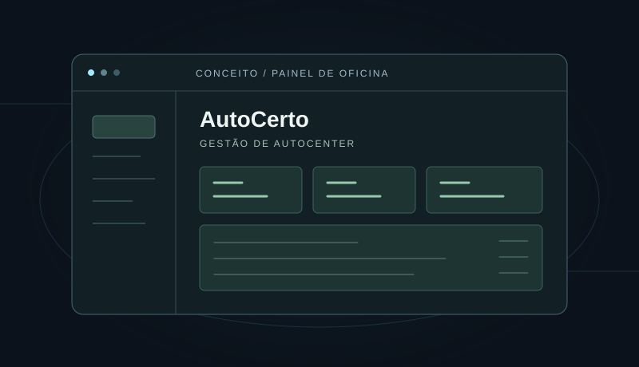

02 / APLICAÇÃO WEBProtótipo

AutoCerto — Gestão de Autocenter
Modelo de gestão de oficina com ordens de serviço, clientes, veículos e estoque. Os cadastros ficam no navegador, com dados iniciais fictícios e gráfico de faturamento ilustrativo.
- HTML
- CSS
- JavaScript
- localStorage
Sem autenticação, backend, sincronização entre dispositivos ou integrações fiscais e de pagamento.
Projeto demonstrativo. Consulte o README para conhecer as funcionalidades, especificações e limitações.